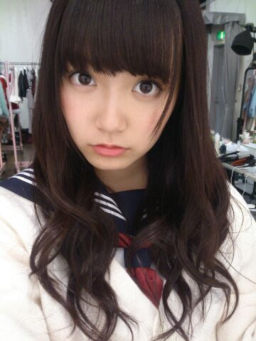

| 2014/01 31 Fri | 中元日芽香 ひめたん(*>ω<*)そ の401 |
選抜発表オンエアされたら
すぐに日記書くつもりだったのに
時間かかっちゃったー
いつか言ったかもしれないけど
選抜発表のあとの日記は
とっても悩んでしまう
ずっと待っててくださったみなさん
ごめんなさい(´；；｀)
前回の日記はたくさんのコメント
本当にありがとうございました！
みなさんに支えられてるんだなってことは
もちろん常々感じてるんだけど
やっぱり日記の節目って意味でも
前回の記事は特別だなー＊
選抜発表のこと書いてくださった方もいて
あーみなさんはもう前を向いているのに
私がここで立ち止まってちゃだめだなって
思いました(´・ω・｀)
一旦落ち着いたから
ちゃんと日記を通して
みなさんに伝えなくちゃねっ
アンダーメンバーに
帰ってきてしまいました
ただいまって言ったら
どんなお返事が返ってくるんだろう。
とりあえず帰ってきました
「次も選抜残ろうねひめたん」
そう言って期待してくださった方々
ステキな報告ができなくてごめんなさい
私たちに選抜が発表されてからオンエアまで
イベントや日記で
みなさんに会うのが辛かった。
落ちたってわかってるのに
どうかなーとか
次も入ってるといいんだけどねーとか
はっきりしたことが言えなかったから......
今の私が一番
ひめきゅんさんに伝えたいことは
選抜入れなくて
悔しいなーとは思うけど
後悔はしてないよってことです。
もっと高いところを目指さなきゃーとか
そう言って怒られてしまうかもしれない
それでも私は7thの期間
精一杯やってきたつもりだから
もっとここでこうすればよかったとか
準備不足だったなーとか
そんなことは思ってないです( ^ω^ )
全力でやった結果なので
あー自分はここまでだったんだーって
もっと頑張んないとなーってのが今回の反省。
なにより力不足だし
まだまだ伸ばすべきところが
私にはいっぱいあるから
またアンダーで勉強してきなさいって
ことなんだと思うし
いろんな場面において
ああ自分まだまだだなって
改めて感じることができてよかったなって思います
選抜メンバーって
それまでの私には未知の世界だったから
いつか入れたらいいな、くらいの
心持ちだったのはありますが
その考えがすでに情けないですが←
踏み入れてみると予想以上に
忙しくて、プレッシャーなんかもあって
充実しててやりがいがあって楽しくて！
初めて単独で雑誌の紙面に載せていただけたり
歌番組もほとんど初めてみたいなものだったりして
新しいことばかりの４ヶ月でした
序列が一列違うだけで
こんなにも違うものかって。
それで感じたのは、アイドルって
こんなにマルチで楽しいお仕事だったんだってこと
いつか選抜入れたらいいなーなんて
自分はなんて悲しいこと言ってたんだって
新しいポジションに立って初めて気づきました
そしてできることなら
いつまでもここにいたいなーって
まあ結果的には落ちちゃったけどね(´・ω・｀)
でもこの7th期間でさらに
乃木坂46のメンバーとして
がんばりたいなって思うようになりました！
今までは辛いことのが多い気がしてたけど
ちょっとリセットされたかなー
7thの握手会では
はじめましての方にたくさん出会えて
前からずっと応援してくださってる方には
ひめたんのこと推しててよかったって
優しい言葉をたくさんいただいて
それだけで私はこの４ヶ月
意味のあるものだったと思うし
全うできたかなって自惚れてみたり(＊^ω^＊)
7thでひめたんのこと見つけて
ちょっと応援してみよっかなーって
なったばかりのみなさんは
またメディアに出させていただけなくなる分
寂しい思いをさせてしまうんじゃないか
今までずっと応援してくださっていたみなさんには
また長いことお待たせしてしまうことに
なってしまうかもしれない
今は何よりそれが不安です。
みなさんはいつも私を助けてくださって
辛いときも励ましてくれるのに
今の私は同じだけみなさんに
元気を与えられる存在なのかなって
よく考えてしまいます
選抜に入ることがすべてじゃないよって
そう言ってくださる方もたくさんいらっしゃるけど
どうしても負い目を感じてしまう。
それでも今の私は
与えられたポジションを
全力で努めることしか考えてないし
今までと変わらず
また努力するつもりです
ひめたんのこと好きだよーって
応援してくださる方が
ひとりでもいらっしゃるなら
私は期待に応えたい。
初心を忘れずに、とよくいいますが
アンダーに帰ってきた今
私は本当の意味で１からのスタートなのかな。
根がネガティブなことあるから
くよくよしちゃうけど
ちゃんと前向きにがんばらなきゃー
アンダーにいると
１枚シングル出してから次までの期間って
長いなーって思うのに
選抜にいるとあっという間なんだよねー
次に順番がまわってくるのは
いつなんだろう......
あーもーだめだー
ポジションがすべてじゃないって
頭ではわかってるつもりなのにー
こんな私ですが
これからも応援してくださったら嬉しいです
いつも本当にありがとうございます
いまはまだパワーをもらってばかりだけど
みなさんにちゃんと恩返しできるようになりたい
まずはひとまわり大きくならなきゃ！

ひなちま、まあや、ろってぃー
そしてきいちゃん選抜おめでとう♪
ななせまるセンターおめでとう♪♪
日芽香